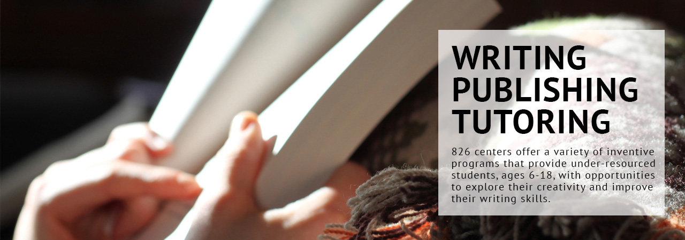

- 


826 National is a nonprofit organization that provides strategic leadership, administration, and other resources to ensure the success of its network of seven writing and tutoring centers. Our mission is based on the understanding that great leaps in learning can happen with one-on-one attention, and that strong writing skills are fundamental to future success.